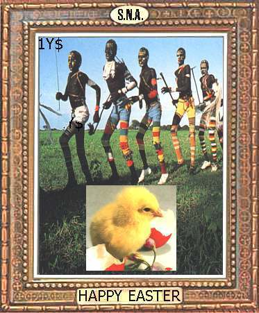

Easter is not only embodied in popular belief in SNA as the most important holiday. It also had its own tradition in the SNA philately which was nurtured carefully for centuries and, alongside the rituals and ceremonies, was also reflected in the artistic development of Easter Dances.

The miniature sheet shown above will be issued on 15th of April 2001. It shows the members of the SNA Philatelic Team on their way to work, where they will celebrate together the holiday. The design is the collective work of the SNA Design Team. The stone engraving is by Sido Wolfi (St. Martin am Snassisberg), the renown Austrian engraver. The stamps were printed by the Helio Courvoisier SNA, in Ciedad de Leon. Source: Briefmarken aus der SNA Republik, 5. Maerz 2001.
Interested in some of the nicest and priciest Easter Eggs, offered by Czars to their Imperial spouses? Then please visit the Russian Easter Eggs page (see the link below).
Links: